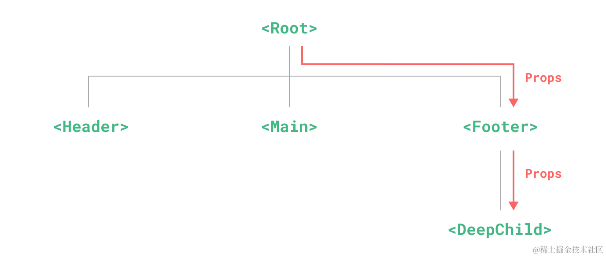
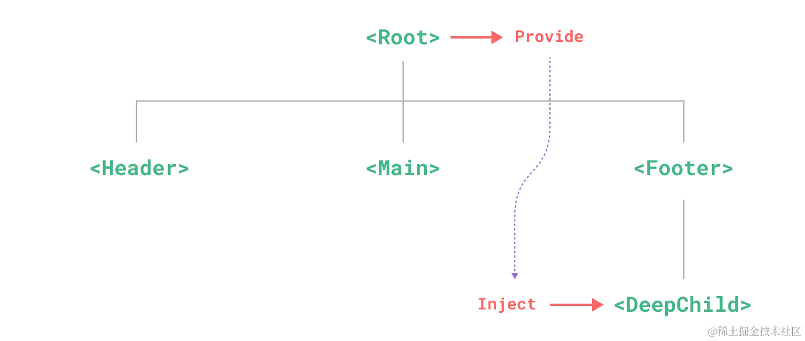
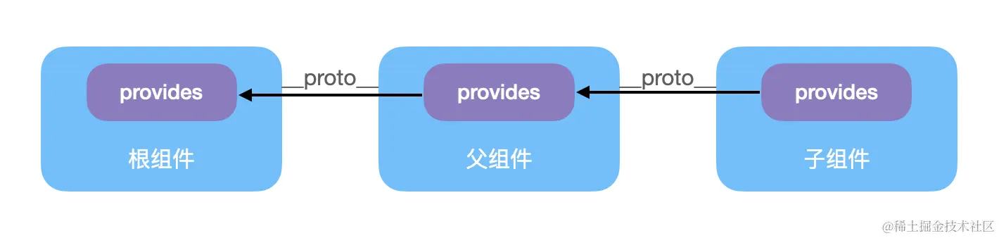

通常情况下，当我们需要从父组件向子组件传递数据时，会使用 props。对于层级不深的父子组件可以通过 props 透传数据，但是当父子层级过深时，数据透传将会变得非常麻烦和难以维护，引用 Vue.js 官网的一张图：

而依赖注入则是为了解决 prop 逐级透传 的问题而诞生的，父组件 provide 需要共享给子组件的数据，子组件 inject 使用需要的父组件状态数据，而且可以保持响应式。

再来看一个依赖注入的使用示例：
js复制代码// 父组件
import { provide, ref } from 'vue'
const msg = ref('hello')
provide(/* 注入名 */ 'message', /* 值 */ msg)
//子组件使用
import { inject } from 'vue'
const message = inject('message')
那么，依赖注入的核心实现原理是怎样的呢？接下来我们就一起分析吧。
Provide 顾名思义，就是一个数据提供方，看看源码里面是如何提供的：
js复制代码export function provide(key, value) {
if (!currentInstance) {
// ...
} else {
// 获取当前组件实例上的 provides 对象
let provides = currentInstance.provides
// 获取父组件实例上的 provides 对象
const parentProvides =
currentInstance.parent && currentInstance.parent.provides
// 当前组件的 providers 指向父组件的情况
if (parentProvides === provides) {
// 继承父组件再创建一个 provides
provides = currentInstance.provides = Object.create(parentProvides)
}
// 生成 provides 对象
provides[key] = value
}
}
这里稍微回忆一下 Object.create 这个函数：这个方法用于创建一个新对象，使用现有的对象来作为新创建对象的原型（prototype）。
所以 provide 就是通过获取当前组件实例对象上的 provides，然后通过 Object.create 把父组件的 provides 属性设置到当前的组件实例对象的provides 属性的原型对象上。最后再将需要 provid 的数据存储在当前的组件实例对象上的 provides上。
这里你可能会有个疑问，当前组件上实例的 provides 为什么会等于父组件上的 provides 呢？这是因为在组件实例 currentInstance 创建的时候进行了初始化的：
js复制代码appContext = {
// ...
provides: Object.create(null),
}
const instance = {
// 依赖注入相关
provides: parent ? parent.provides : Object.create(appContext.provides),
// 其它属性
// ...
}
可以看到，如果父组件定义了 provide 那么子组件初始的过程中都会将自己的 porvide 指向父组件的 provide。而根组件因为没有父组件，则被赋值为一个空对象。大致可以表示为：

Inject 顾名思义，就是一个数据注入方，看看源码里面是如何实现注入的：
js复制代码export function inject(key, defaultValue, treatDefaultAsFactory = false) {
// 获取当前组件实例
const instance = currentInstance || currentRenderingInstance
if (instance) {
// 获取父组件上的 provides 对象
const provides =
instance.parent == null
? instance.vnode.appContext && instance.vnode.appContext.provides
: instance.parent.provides
// 如果能取到，则返回值
if (provides && key in provides) {
return provides[key]
} else if (arguments.length > 1) {
// 返回默认值
return treatDefaultAsFactory && isFunction(defaultValue)
// 如果默认内容是个函数的，就执行并且通过call方法把组件实例的代理对象绑定到该函数的this上
? defaultValue.call(instance.proxy)
: defaultValue
}
}
这里的实现就显得通俗易懂了，核心也就是从当前组件实例的父组件上取 provides 对象，然后再查找父组件 provides 上有没有对应的属性。因为父组件的 provides 是通过原型链的方式和父组件的父组件进行了关联，如果父组件上没有，那么会通过原型链的方式再向上取，这也实现了不管组件层级多深，总是可以找到对应的 provide 的提供方数据。
通过上面的分析，我们知道了依赖注入的实现原理相对还是比较简单的，比较有意思的事他巧妙地利用了原型和原型链的方式进行数据的继承和获取。
在执行 provide 的时候，会将父组件的的 provides 关联成当前组件实例 provides 对象原型上的属性，当在 inject 获取数据的时候，则会根据原型链的规则进行查找，找不到的话则会返回用户自定义的默认值。
最后，我们知道 Vue 通过了依赖注入的方式实现了跨层级组件的状态共享问题。跨层级的状态共享问题是不是听起来有点耳熟？没错，那就是 vuex / pinia 所做的事情。
那思考一下 Vue 3 是否可以依托于 Composition API + 依赖注入 实现一个轻量级的状态管理工具呢？